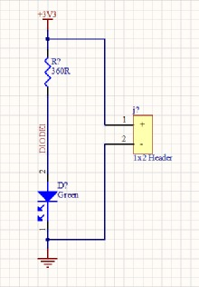
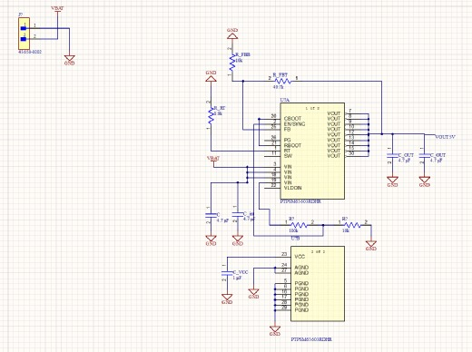

Why PCBs
Every project on this site so far ran on breadboards and jumper wires. Designing my own boards is the next step toward hardware that's compact and reliable. It also follows on from a Cornerstone research summary I co-wrote on automated PCB manufacturing and testing.
I first set up a project in KiCad, then moved to Altium Designer, an industry-standard tool for professional board design.
The LED board
The circuit is deliberately simple: a 3.3 V supply feeds a 360 Ω current-limiting resistor and a green LED to ground, with a two-pin header to bring power onto the board. The resistor keeps the LED current to a few milliamps, well within its rating.

Because the circuit is trivial, all the effort went into learning how a real board gets made, step by step.
What I learned building it
Custom schematic library
I drew my own LED schematic symbol and stored it in a project schematic library, instead of relying only on built-in parts.
Custom footprint library
I built a PCB footprint library, including an 0805 surface-mount footprint, which defines the copper pads the part solders to.
Importing a real manufacturer part
For the resistor I imported an actual orderable part, a Yageo AC0805FR-07360RL (360 Ω, 1%, 0805), from SnapEDA as an integrated library. It came with its symbol, footprint, and a 3D STEP model, so the part on the board matches the part I would buy.
Schematic capture
I connected the parts with power ports for +3V3 and ground and a header for the supply, then linked the schematic to a PCB document.
Board layout
Next I'll place the footprints, draw the board outline, route the traces, and run Altium's design-rule check.
Side exercise: a nanosatellite power system
Separately, I'm working through a learning exercise on the electrical power system (EPS) of a nanosatellite: the chain that takes energy from the battery and turns it into the stable voltages the rest of the spacecraft needs. I'm building it up one stage at a time.
The first stage is regulation. It's a buck converter built around a TI TPSM63603 power module, which steps the battery bus down to a 5 V rail. The module integrates the controller, switches, and inductor, accepts up to 36 V in, and delivers up to 3 A. I imported the manufacturer's symbol and footprint and drew the schematic: battery input connector, input decoupling, a feedback divider to set the output voltage, a frequency-setting resistor, and output capacitors.

What's next
- Lay out and route the LED board, pass the design-rule check, and generate fabrication files.
- Order the board, solder the 0805 parts by hand, and confirm the LED lights at the expected current.
- Add the remaining stages of the EPS exercise and check the regulator against the datasheet's reference design.